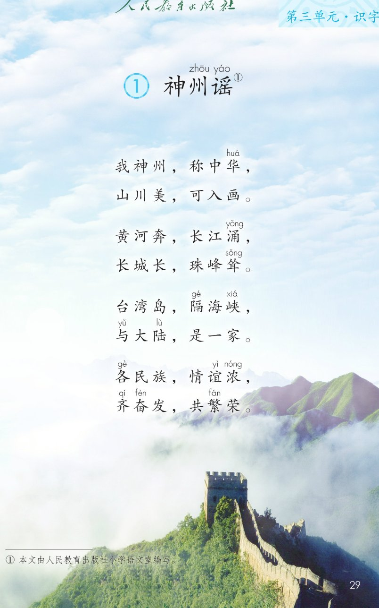
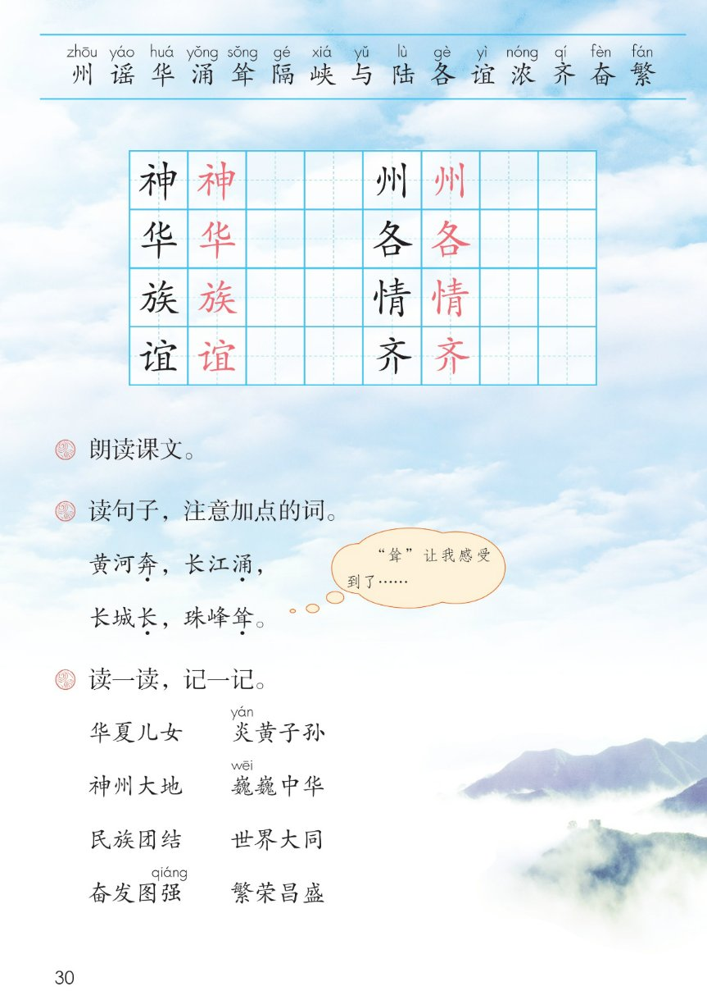

×
🔊 手机听不到声音怎么办？
① 先把手机
媒体音量调大 ，确认没开静音、没连蓝牙耳机；在微信里打开的，点右上角「⋯ → 用浏览器打开」。
② 还是没声音？到应用商店免费下载
Microsoft Edge 浏览器 （它自带朗读发声），用它打开本页面就能出声。
③ 换了 Edge 仍然没声音，说明这部手机的
硬件/系统不支持 网页朗读（多为老旧机型）；近几年买的新手机一般都能正常播放。
→ 打开声音自检
🏞 识字 1《神州谣》· 有声图文带读
语文 · 第三单元·识字 · 课本 第 29~30 页 · 三字一句的歌谣
课文 4 组 · 8 行
会认字 15
会写字 8
听写词 10
近义词 4 组
深入理解 8 题
本领 三字谣
🎧 五步学（可随时点任意一句、一个字、一个词单独听）： ① 听读课文 ——4 组 8 行，三字一顿，一句一句读，读到哪句哪句发光；开「跟读」后读完一句留时间自己读。② 学字词 ——15 个会认字、8 个会写字（含书写提示），点一个读一个。③ 词语·听写·造句 ——读课本第 30 页三道课后题、加点词 4 个和 8 个四字词，听写 10 个词，再听 4 组近义词辨析。 ④ 深入理解 ——8 道题（认知 / 理解 / 运用 / 拓展），开放题答案不唯一，先想后看。⑤ 诵韵文·齐读 ——按 5 步记住这首三字谣的顺序，再按课后题①分工朗读全课。
📚 本册第三单元·识字（照课本第 29 页页眉）： 1 神州谣（本课）前后连起来看：第一、二单元读故事 → 第三单元用三字歌谣识字，认识我们的祖国
📖 课文出处（课本第 29 页照录） ：① 本文由人民教育出版社小学语文室编写。课题「神州谣」的「州」「谣」上方注音，右上角标 ①；注音照课本第 29~30 页
点组前的 ①~④ 听整组
🏞 课题 ：① 神州zhōu 谣yáo
（「州」「谣」的注音与右上角 ① 照课本第 29 页）
🔁 跟读模式：关
👁 隐藏注音（自测用）
注音只标本课要认、要写的字和课本明确标了音的字，每字只注一次；会写字里课本未注的「神 / 族 / 情」按字典补注，供参考
🎤 朗读要求 · 朗读课文（课后题①的老师标准） 读准字音 ：州 zhōu 、谣 yáo 、华 huá 、涌 yǒng 、耸 sǒng 、隔 gé 、峡 xiá 、与 yǔ 、陆 lù 、各 gè 、谊 yì 、浓 nóng 、齐 qí 、奋 fèn 、繁 fán （照课本第 29~30 页）；读出节奏 ：三字一句，三字一顿 ；逗号停得短，句号停得长，两句一组，组间再停久一点；不添不漏 ：每行六个字，一个字都不能少；「神 / 族 / 情」是课本未注音的会写字，页面按字典补注，供参考 ；读出自豪 ：课后题②的加点词奔、涌、长、耸 读得有力量；是一家、情谊浓 读得亲切；拍手读 ：三字一拍，读熟了试着按后面的 5 步背下来。
①
我神shén 州，称中华huá ，
山川美，可入画。
②
黄河奔，长江涌yǒng ，
长城长，珠峰耸sǒng 。
③
台湾岛，隔gé 海峡xiá ，
与yǔ 大陆lù ，是一家。
④
各gè 民族zú ，情qíng 谊yì 浓nóng ，齐qí 奋fèn 发，共繁fán 荣。
🤔 想一想（点我可跳过）
点一张图，听读整页

第 29 页 · 课题、韵文全文与脚注

第 30 页 · 生字表与课后题
📖 人教版《语文》二年级下册 · 课本第 29~30 页 · 图片仅供个人学习，版权归人民教育出版社所有
点一个字，听读音、词语和课文里的句子；照课本第 30 页生字表顺序，全部黑字、没有蓝色多音字
结构、部首、笔画与书写提示为通用规范，供参考，以教材和字典为准
神
shén
神州 · 精神
9 画 · 左右（礻）
示字旁窄，右边申写正，中竖挺直
州
zhōu
神州 · 神州大地
6 画 · 独体（川）
三个点方向一致，三竖间距均匀
华
huá
中华 · 华夏
6 画 · 上下（十）
上面的化写紧凑，下面长横托住
各
gè
各民族 · 各自
6 画 · 上下（夂）
折文撇捺舒展，下面的口写扁
族
zú
民族 · 各族
11 画 · 左右（方）
左边方写窄，右边部分紧凑
情
qíng
情谊 · 心情
11 画 · 左右（忄）
竖心旁先写两点，右边青横画均匀
谊
yì
情谊 · 友谊
10 画 · 左右（讠）
言字旁短，右边宜宝盖写宽
齐
qí
齐奋发 · 齐心
6 画 · 上下（齐）
上点居中，撇捺舒展，两竖对齐
点一行，听题目、句子和词语
📖 课后题（课本第 30 页照录） ：奔 ，长江涌 ， ◇ 长城长 ，珠峰耸 。课本另给「炎 yán / 巍 wēi / 强 qiáng」注音；下面 10 行是三道题、加点词、气泡与 8 个四字词。
课后题 ① 朗读课文。
课后题 ② 读句子，注意加点的词。
加点句 一 黄河奔 ，长江涌 ，
加点句 二 长城长 ，珠峰耸 。
课本气泡 “耸”让我感受到了……
课后题 ③ 读一读，记一记。
四字词 1 华夏儿女 炎yán 黄子孙
四字词 2 神州大地 巍wēi 巍中华
四字词 3 民族团结 世界大同
四字词 4 奋发图强qiáng 繁荣昌盛
读两遍 → 你在纸上写 → 报答案 → 听示范句
准备听写 · 共 10 个词
○ ○ ○
点下面的「开始听写」，听到一个词就写一个词。
▶ 开始听写
🔁 再读一遍
👁 看答案
点词听读，点句子听示范句，再自己说一句
1 神州 会写字 · 神、州
示范句：我神州，称中华。
✏️ 我也能说：说说祖国
2 中华 会写字 · 华
示范句：我神州，称中华。
✏️ 我也能说：叫什么名字
3 山川 课文核心词
示范句：山川美，可入画。
✏️ 我也能说：什么怎么样
4 台湾岛 课文核心词
示范句：台湾岛，隔海峡，与大陆，是一家。
✏️ 我也能说：是一家
5 海峡 会认字 · 峡
示范句：台湾岛，隔海峡。
✏️ 我也能说：隔着什么
6 大陆 会认字 · 陆
示范句：与大陆，是一家。
✏️ 我也能说：和谁一家
7 民族 会写字 · 族
示范句：各民族，情谊浓。
✏️ 我也能说：大家怎么样
8 情谊 会写字 · 情、谊
示范句：各民族，情谊浓。
✏️ 我也能说：说说感情
9 齐心 会写字 · 齐
示范句：齐奋发，共繁荣。
✏️ 我也能说：一起做什么
10 繁荣 会认字 · 繁
示范句：齐奋发，共繁荣。
✏️ 我也能说：越来越好
相同点 / 不一样在哪 / 各造一句
山川 — 山河
相同：都写山和水、祖国的大地 。
不一样：山川 是课文里的原词，山川美，可入画，说的是一眼能看见的山和水；山河 更常说整片国土，比如祖国山河，带一点自豪的味道。
山川：山川美，可入画。
情谊 — 友情
相同：都写人和人之间感情好 。
不一样：情谊 是课文里的原词，各民族，情谊浓，说的是很多民族之间的感情；友情 多说同学、朋友两个人之间的交情，范围小一些。
情谊：各民族，情谊浓。
奋发 — 努力
相同：都写肯下功夫、往前赶 。
不一样：奋发 是课文里的原词，齐奋发，共繁荣，写的是大家一起振作起来；努力 说话里更常用，可以说一个人努力，也可以说大家努力。
奋发：齐奋发，共繁荣。
繁荣 — 兴旺
相同：都写日子越过越好、越来越有生气 。
不一样：繁荣 是课文里的原词，共繁荣，接在齐奋发后面；兴旺 常说生意兴旺、人丁兴旺，说的是一处地方、一件事热热闹闹地往上走。
繁荣：齐奋发，共繁荣。
三字一顿 我神州，称中华，
四个加点词 黄河奔 ，长江涌 ，长 ，珠峰耸 。
与…是一家 台湾岛，隔海峡，
齐…共… 齐奋发，共繁荣。
标「答案不唯一」的题，说得有道理都对
认知 这首三字谣一共几组、几行？第二组写了祖国的哪四处山河？看解析
🤔 想一想
解析：
四组，每组两行，一共八行。
黄河奔，长江涌。
长城长，珠峰耸。
认知 课后题②：两句里加点的词是哪四个字？它们分别写什么？看解析
🤔 想一想
解析：
奔、涌，都在三点水那一组里写水。
长、耸，一个说长，一个说高。
耸让我感受到了，后面自己接一句。
理解 课后题②的气泡说「耸」让我感受到了……你能接一句什么？为什么用「耸」不用「高」？看解析
🤔 想一想
解析：
珠峰高得好像插进云里。
高只说高度，耸还写挺立的样子。
长城长，珠峰耸，一横一竖。
🌈 答案不唯一，说得有道理都对
理解 「台湾岛，隔海峡，与大陆，是一家」这四句是什么意思？看解析
🤔 想一想
解析：
台湾岛和大陆中间隔着一条海峡。
两岸同属一个中国，是一家人。
海隔得开，一家分不开。
理解 最后一组「各民族，情谊浓，齐奋发，共繁荣」四行是怎么连起来的？看解析
🤔 想一想
解析：
各民族，情谊浓：谁，感情怎么样。
齐奋发，共繁荣：一起做，一起好。
两个字都是一起的意思。
运用 课后题③：从「读一读，记一记」里挑一个四字词说一句话。看解析
🤔 想一想
解析：
八个四字词里任选一个。
我、我们、同学们、各民族。
做了什么，或者心里怎么想。
🌈 答案不唯一，说得有道理都对
运用 课后题①：朗读课文。三字谣的节奏该怎么读？照「山川美，可入画」的样子再说一行。看解析
🤔 想一想
解析：
三字一拍，逗号短、句号长。
山河有力量，一家要亲切。
什么，怎么样，也是三字加三字。
🌈 答案不唯一，说得有道理都对
拓展 读完《神州谣》，你还知道祖国哪些值得骄傲的山河？你想做一件什么事？看解析
🤔 想一想
解析：
三峡、桂林、青藏高原都可以。
家乡的河、山、田野也算。
读给家人听、画下来、写好字。
🌈 答案不唯一，说得有道理都对
点一步，听这一步
1
先 · 说祖国的名字
2
再 · 说壮美的山河
💬 课后题①照录 ：朗读课文。先 说祖国的名字 → 再 说壮美的山河 → 接着 说台湾岛和大陆是一家 → 然后 说各族人民情谊浓 → 最后 说一起奋发、共同繁荣。
课后题①：点一张卡，听这一组读的那一行
📖 齐读·神州
我神州，称中华，
💬 三字一顿，读出自豪
✏️ 齐读·山川
山川美，可入画。
💬 舒展，像在看一幅画
💧 小组·黄河
黄河奔，长江涌，
💬 奔、涌，读得有力量
🧱 小组·长城
长城长，珠峰耸。
💬 长、耸，一横一竖想画面
🌊 男女生·台湾
台湾岛，隔海峡，
💬 隔海峡稍停，别读断词
❤️ 男女生·一家
与大陆，是一家。
💬 亲切、肯定
🤝 齐读·民族
各民族，情谊浓，
💬 暖一点，情谊浓
🌾 全班·繁荣
齐奋发，共繁荣。
💬 响亮、有精神，收住全课